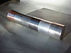

alloy

Definition: An alloy is a mixture of chemical elements of which at least one is a metal. Unlike chemical compounds with metallic bases, an alloy will retain all the properties of a metal in the resulting material, such as electrical conductivity, ductility, opacity, and luster, but may have properties that differ from those of the pure metals, such as increased strength or hardness. In some cases, an alloy may reduce the overall cost of the material while preserving important properties. In other cases, the mixture imparts synergistic properties to the constituent metal elements such as corrosion resistance or mechanical strength.
Source: Wikipedia
Wikipedia Page
Wikidata Page